Using VMware Server
Author: Grant Coady
Published: June 2, 2007
Contents
- Why VM? Why VMware Server?
- Terminology
- Host considerations
- Install VMware server
- Install guest OS
- Install vmware-tools
- Gotchas: things to watch out for
- Examples: things you can do
- Further reading...
Why VM? Why VMware Server?
What's better than dual booting another OS and Slackware? Run both OS at the same time! Running VMware's Server you too may 'have your cake and eat it too' :) Evaluate other distros on virtualised hardware—this is of great value if you're fortunate enough to be running new hardware the distro kernel does not yet support. Run live CDs from their .iso image.
VMware Server is a free download and can both create and host virtual machines. The free VMware Player can only run existing VMs while the VMware Workstation product requires a hefty licence fee.
Terminology
- client
- the machine upon which the VMware Server Console is being run
- guest
- the virtual machine containing the guest Operating System
- host
- the machine on which the guest OS (VMs) are running
- server
- provides virtualised hardware and mediates access to physical hardware resources
- virtual machine
- environment containing a guest OS, parts of the environment are virtualised by the VMware server, some components may be real physical hardware with access mediated by the server
Host considerations
operating system
The author runs winxp as primary desktop OS, with several linux boxen running Slackware on the local network. PuTTY is the terminal used to interact with the Slackware machines. The author subscribes to the reasoning that GUIs are primarily a method of presenting many CLI terminals, it makes little difference if they be PuTTY or xterm :o)
Consider too, that the machine a VM is being hosted on doesn't have to be the same machine one interacts with the VM with. The VMware Server Console may connect to a networked machine as easily as the local machine. LAN console performance is close to locally hosted performance with GUI based guest OS.
hardware
Any recent AMD or Intel based box with 512MB (256MB if you're careful) or more memory and a few GB spare on the hard drive should do. You need the hardware to run the host OS, then more resources to run the guest OS as well.
The author is running two machines as VM hosts: Intel P4 2.4GHz with 1GB memory and 2 x 250GB HDD, and an Intel Core 2 Duo E6400 with 1GB memory and 4 x SATA HDDs providing 440GB.
network
The VMware Server creates bridged network nodes for the virtual machines (VMs), so each VM appears on the LAN. The LAN is used to transfer files between the VM and the host system or other machines.
Install VMware server
Get VMware server from http://www.vmware.com/download/server/ — register for a free serial number and you too may play with more than one OS running at the same time.
Install to Windows
Installing VMware Server to WinXP is straightforward: double-click the install file VMware-server-installer-1.0.3-44356.exe and follow the prompts.
Install to Slackware
requirements
VMware server 1.0.3 (latest version as of this writing) requires a kernel no later than 2.6.19.x for a successful install (See patching vmware below for how to run VMware Server with later kernels). Plan where the VM disk images will be stored, the default is /var/lib/vmware/Virtual Machines. You want to be sure there's enough disk space for your VMs.
Requires the 'd' development tools to be installed, along with the kernel source (from 'k', or kernel.org) to match the running kernel. The writer tested VMware Server 1.0.3 with 2.4.34.4 and 2.6.19.7 linux-kernels on Slackware-11.0.
The VMware VMware-server-1.0.3-44356.tar.gz install tarball and a serial number from http://www.vmware.com/download/server/.
prepare
On Slackware, VMware Server requires the sysvinit directories and the PAM directory as a placeholder. You do not need to install PAM.
As root, create the required extra directories:
# mkdir /etc/rc.d/{init,rc{0,1,2,3,4,5,6}}.d
# mkdir /etc/pam.d
Note: Slackware later than 11.0 may include the sysvinit directories.
install
Extract the server install tarball and run the installer script:
# cd /tmp
# tar xvzf /path/to/VMware-server-1.0.3-44356.tar.gz
# cd vmware-server-distrib
# ./vmware-install.pl
and follow the prompts, taking the defaults. You don't need the NAT or host networking options to get started.
post-install: vmware-config.pl
Script /usr/bin/vmware-config.pl needs to be run again if you boot into a different kernel version. Building the kernel 'vmmon' module must succeed for a viable installation of Vmware Server. Also run this script to change your VM network or X server settings.
run
Fire up your favourite GUI and run:
$ vmware &
Now you're ready to install a guest OS. Note: you may also connect to the Slackware host system with the VMware Server Console installed to another machine on the LAN.
Install guest OS
Installing a guest OS is the same process whether you're running the VMware Server Console on WinXP or Slackware. On starting VMware Server Console, the first choice is which host machine to connect to:
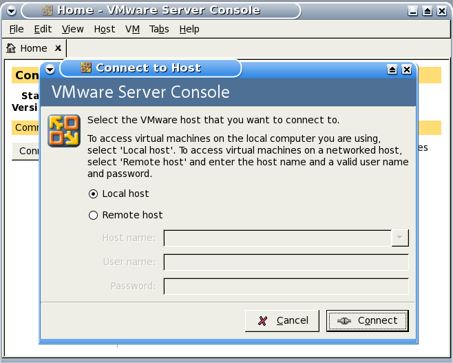
Connect to local or remote host machine.
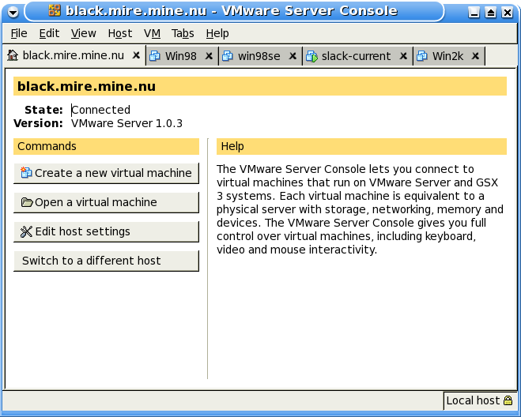
VMware Server Console, connected to local host
guest: slack-current
For this exercise let's install slackware-current (as at 2007-05-25) for review. To save burning a DVD we'll install from the DVD .iso image. The writer created the DVD .iso from a local rsync mirror of the install tree. You may do this, or locate and download an unofficial DVD image.
Use the File, New, Virtual Machine wizard to create a Typical, "Other Linux 2.6.x kernel" VM named "slack-current" with "Use bridged networking" on an 8.0GB IDE (slack-current doesn't see the SCSI) virtual disk.
Before starting the VM, "Edit virtual machine settings" and point the virtual CD-ROM at the slackware-current install .iso file.
Click on "Start this virtual machine". If all goes to plan, you will be presented with the ISOLINUX start screen. Follow the usual procedure to install slack-current, run fdisk /dev/hda and create swap and / partitions, then run setup as usual.
Do VM, Removable Devices, CD-ROM1, Disconnect to release the install .iso image.
guest: win98se
Requires win98se startup disk and the install CDROM.
Use the File, New, Virtual Machine wizard to create a Typical, Windows 98 VM on a 1GB virtual disk.
Boot VM from the floppy disk and run fdisk to prepare the virtual hard disk, here, the writer split the 1GB virtual hard drive into 512MB C: and D:. Reboot the VM by using Power, Reset after finishing with fdisk.
Format the new partition(s).
Here the writer copied the install CD files to d:\install\win98 as this saves the need to locate the installation CDROM later when modifying the Win98 system. Install win98 as usual. Reboot windows for luck prior to installing VMware Tools.
guest: fails to boot CDROM
If a VMware guest cannot see a bootable disk it will attempt a PXE boot and appear to freeze. Do a Power, Power Off to stop the VM guest. Make sure you have a bootable disk or image connected to the VM floppy or VM CDROM, then start the VM guest, click to focus the guest and press F2 key to enter the VM guest BIOS.
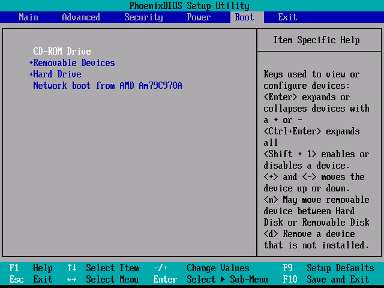
VMware guest OS BIOS, boot screen
Move the CDROM option up to the top of the Boot order and save the settings, you should now be able to boot from the CDROM.
Install vmware-tools
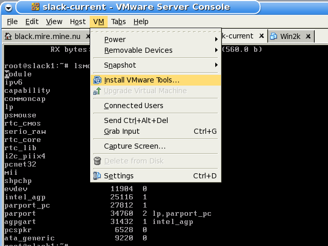
VM, Install VMware Tools...
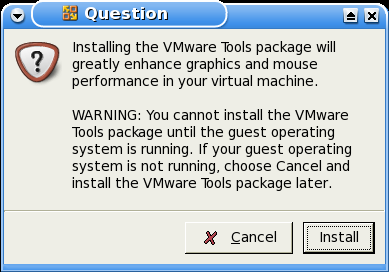
VMware Tools install confirmation dialog
for slackware-current
Press Ctrl-Alt keys to release the cursor then select VM, Install VMware Tools..., then click Install. This causes VMware to present a special CDROM install image to the guest VM. You need to mount the virtual CDROM, unpack the tarball to /tmp, then run the install script. Also, you must create the PAM placeholder directory. Perform these steps:
# mkdir /etc/pam.d
# mount /mnt/cdrom # this mounts a virtual CDROM containing VM Tools tarball
# cd /tmp
# tar xvzf /mnt/cdrom/VMwareTools-1.0.3-44356.tar.gz
# cd vmware-tools-distrib
# ./vmware-install.pl
Follow the prompts and take the defaults. Not all of the options will 'take'—the vmhgfs and vmxnet modules will not be available, but the VM will work without them.
for win98
Press Ctrl-Alt keys to release the cursor then select VM, Install VMware Tools...
If the installer does not start automatically, manually start it by clicking the Win98 Start, Settings, Control Panel, Add/Remove Programs, Install, Next, Finish.
Follow the onscreen prompts and the directions to install the video driver, reboot.
If the installer warned that the mouse was not installed, manually install the VMware mouse driver in a similar fashion: right-click My Computer, then Properties, Device Manager, double-click the current mouse, then Driver, Update Driver... Next, Display a list..., Have Disk, Browse to C:\Program Files\VMware\VMware Tools\Drivers\mouse, then OK, OK, Next and Finish, wait 5–10 seconds for the new mouse driver to take effect.
You'll notice that now the mouse pointer behaves better and is released automatically on leaving the VM screen area. Screen draw speed is improved as well.
Gotchas: things to watch out for
- When starting a VM, you get: "The process exited with an error: <blank> End of error message." Try doing: chmod +x /etc/rc.d/rc.sysvinit, then reboot
- The '0' in vmware serial numbers is zero
- Do not run a screensaver in the VM guest OS, it may lockup X
- The Ctrl-Alt keys bring the guest display out of fullscreen mode.
- The F11 key brings VMware Server Console out of fullscreen mode.
- The VM guest OS continues to run headless if you close the server console with the VM running.
- The VM is attempting to perform a PXE boot! This happens when there is no bootable image on the floppy or hard drive, perhaps fix it by entering the VM BIOS and making the CDROM the first boot device, then mounting a bootable CD or .iso image.
Examples: things you can do
screen shots
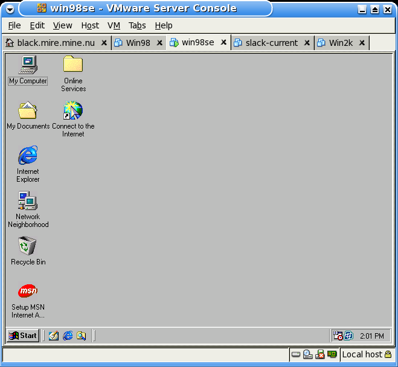
Win98 on the Slackware box.
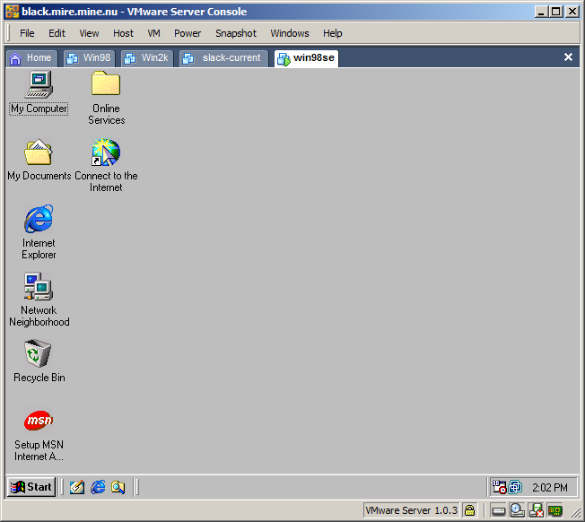
Win98 on the Slackware box viewed with VMware Server Console on WinXP.
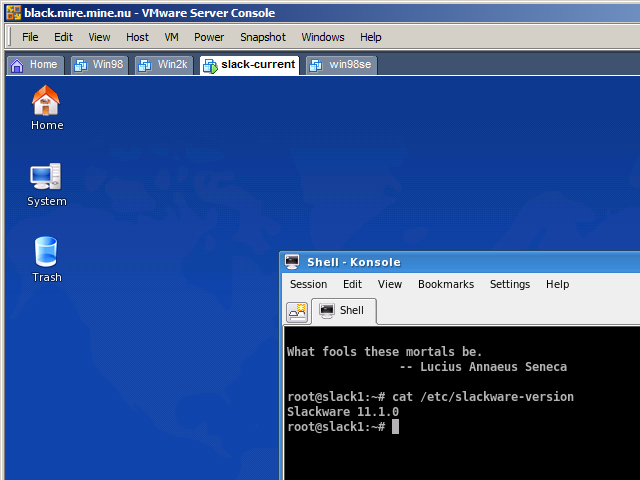
Slack-current (KDE) on the Slackware box viewed with VMware Server Console
on WinXP.
patching vmware
If you want to run VMware with linux-kernels more recent than 2.6.19.x you need to patch the VMware runtime support. As of this writing, the latest patch is http://knihovny.cvut.cz/ftp/pub/vmware/vmware-any-any-update110.tar.gz.
- – Answer 'no' when the installer wants to execute the
/usr/bin/vmware-config.pl script (or, run the patch
update after the installer fails to create the vmmon module)
- – Extract the patch tarball to /tmp and run the patch script, it will in turn offer to run /usr/bin/vmware-config.pl, answer 'y' to complete the installation
# cd /tmp # tar xvzf /home/mirror/vmware/vmware-any-any-update110.tar.gz # cd vmware-any-any-update110/ # ./runme.pl
transfer data between guest, host and other machines
- Use NFS or Samba, whichever suits the environment. With the default bridged networking, the VM is just another machine on the local network segment. More below.
- If you're about to burn a CD or DVD with data for the VM, use the .iso image instead!
- Floppy image files may be used in place of the physical floppy disk, both for reading and writing. More below.
sharing a partition: samba
Use samba to share data with windows machines. You need a minimal /etc/samba/smb.conf file, a samba password and a directory to share.
This example shares /home/jmusic/musicdb as 'music', the user name is 'grant' and the workgroup name is 'scattered'.
- – minimal /etc/samba/smb.conf
# cat /etc/samba/smb.conf [global] workgroup = SCATTERED server string = samba on black log file = /var/log/samba.%m max log size = 50 name resolve order = hosts socket options = TCP_NODELAY SO_RCVBUF=8192 SO_SNDBUF=8192 load printers = No show add printer wizard = No os level = 33 preferred master = No domain master = No hosts allow = 192.168.1., 192.168.2., 127. [homes] comment = Home Directories valid users = %S read only = No browseable = No [music] path = /home/jmusic/musicdb valid users = grant read only = No- – create samba password for 'grant'—this password will be used at the machine mounting the samba share
# smbpasswd -a grant New SMB password: Retype new SMB password:- – restart the samba server
# /etc/rc.d/rc.samba restart Starting Samba: /usr/sbin/smbd -D /usr/sbin/nmbd -D- – the result in WinXP client, Win98se VM
- 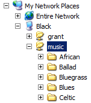 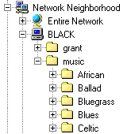
- – mounting a samba share in Slackware VM
- creating an empty smb.conf silences an error message, perform
the mount
# touch /etc/samba/smb.conf # mount -o username=grant //black/music /mnt/hd/ Password: # ls -l /mnt/hd/ total 0 drwxr-xr-x 1 root root 0 2006-10-29 20:46 African/ drwxr-xr-x 1 root root 0 2006-10-29 20:46 Ballad/ drwxr-xr-x 1 root root 0 2006-10-29 20:46 Bluegrass/ drwxr-xr-x 1 root root 0 2007-03-31 20:50 Blues/ drwxr-xr-x 1 root root 0 2007-02-11 21:45 Celtic/ ...
sharing a partition: NFS
One generally uses NFS for sharing (exporting) files to other Linux (UNIX) machines. NFS requires the server define its exports in the /etc/export file. You need the portmapper to be running. For this example we have 'black' exporting the /home/jmusic/musicdb directory.
- – make sure nfs-utils is installed, in our case we had to install it
# ls /var/adm/packages/ |grep nfs # turned up nothing, so we: # installpkg /path/to/slackware-11.0/slackware/n/nfs-utils-1.0.10-i486-3.tgz- – define the export
# cat /etc/exports /home/jmusic/musicdb 192.168.1.0/24(sync,rw,no_root_squash,subtree_check)- – restart the NFS daemons
# /etc/rc.d/rc.rpc restart Starting RPC portmapper: /sbin/rpc.portmap Starting RPC kernel lockd process: /sbin/rpc.lockd Starting RPC NSM (Network Status Monitor): /sbin/rpc.statd # /etc/rc.d/rc.nfsd restart mount: nfsd already mounted or /proc/fs/nfs busy mount: according to mtab, nfsd is already mounted on /proc/fs/nfs Starting NFS server daemons: /usr/sbin/exportfs -r /usr/sbin/rpc.rquotad /usr/sbin/rpc.nfsd 8 /usr/sbin/rpc.mountd
- – mount the NFS export in the Slackware VM
# mount black:/home/jmusic/musicdb /mnt/hd/ # ls -l /mnt/hd/ total 28 drwxrw-rw- 30 1000 users 960 2006-10-29 20:46 African/ drwxrw-rw- 4 1000 users 104 2006-10-29 20:46 Ballad/ drwxrw-rw- 9 1000 users 320 2006-10-29 20:46 Bluegrass/ drwxrw-rw- 169 1000 users 5664 2007-03-31 20:50 Blues/ drwxrw-rw- 21 1000 users 656 2007-02-11 21:45 Celtic/ ...
creating floppy images
Floppy disk image files may be used in place of physical disk, this section describes how to create such images under Slackware, windows and within the VM. Each example will create an ms-dos format image, under linux or with a linux guest OS of course you may choose to create and use ext2 format floppy images.
with slackware
- Create a blank image with dd, associate the image with a loop device, format the image and mount it:
# dd if=/dev/zero bs=1k count=1440 of=floppy.img 1440+0 records in 1440+0 records out 1474560 bytes (1.5 MB) copied, 0.0197354 seconds, 74.7 MB/s # losetup /dev/loop0 floppy.img # mkdosfs /dev/loop0 mkdosfs 2.10 (22 Sep 2003) # mount /dev/loop0 /mnt/floppy
with windows
You may use a shareware program called WinImage from http://winimage.com to create a floppy disk image and inject files into that image.
Use File, New to create a new image; Image, Inject... to inject files to the new image and File, Save to save the new floppy disk image.
In the File, Save dialog, select Save as type to be All files(*.*) so you may use a name like floppy.img instead of the default .IMZ compressed image format.
with the VM
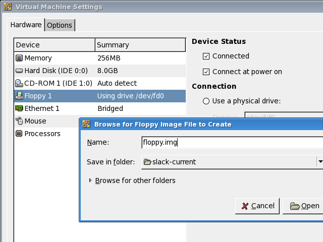
- Use "VM, Settings, Hardware, Floppy, Use a floppy image, Create..." to create a blank floppy image file.
- In the Guest OS, format then mount the floppy image as if it were
a real floppy:
# mkdosfs /dev/fd0 mkdosfs 2.11 (12 Mar 2005) # mount /mnt/floppy/
run VMs on a headless host
You may run VM guests with a remote console. X is not required to be running on the host machine to support a GUI VM.
run live CDs from the .iso image
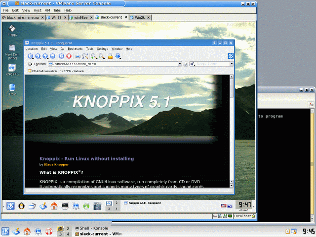
Running Knoppix 5.1 live DVD in a VM
Point the VM CDROM at a CD/DVD drive or an .iso image, tell the VM BIOS to boot from CDROM and you will have the live CD running in a VM.
Further reading...
- http://www.vmware.com/pdf/server_vm_manual.pdf
- VMware Server User Guide
- http://www.vmware.com/support/pubs/server_pubs.html
- VMware Server Documentation
- http://pubs.vmware.com/guestnotes/wwhelp/wwhimpl/js/html/wwhelp.htm
- Guest Operating System Installation Guide
- http://www.vmware.com/community/index.jspa
- Discussion Forums
- http://specialreports.linux.com/article.pl?sid=07/01/08/192251&tid=136&tid=129
- Special report: Virtualization on Linux
- If anything is going to be big in 2007, it'll be virtualization—the ability to run multiple virtual resources and operating systems in a single physical environment...
- http://www.linuxinsight.com/finally-user-friendly-virtualization-for-linux.html
- Finally user-friendly virtualization for Linux
- The upcoming 2.6.20 Linux kernel is bringing a nice virtualization framework for all virtualization fans out there. It's called KVM, short for Kernel-based Virtual Machine...
- http://specialreports.linux.com/article.pl?sid=06/12/19/0456207&tid=136&tid=86
- Installing Linux-VServer
- Linux-VServer offers a simple way to run several virtual servers on one piece of physical hardware. While it lacks some of the flexibility...